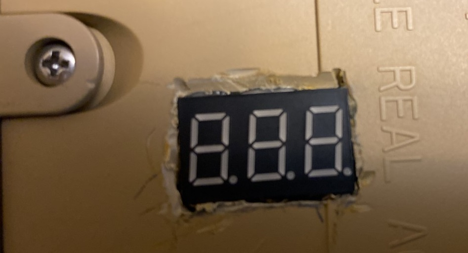
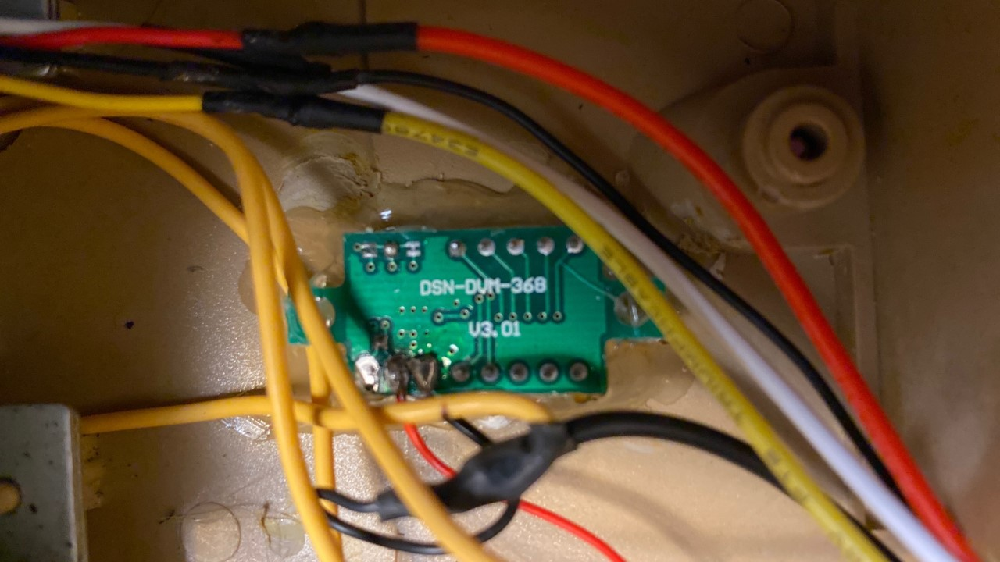

Voltmeter
Requirements
- The voltmeter shall always be powered when the power switch is on
- The voltmeter shall show the output of the battery
- The voltmeter shall be mounted flush with the bottom of the tank (so it will not snag any floor items)
The area for this voltmeter must be cut out of the bottom plastic, using a "dremel" like cutter with a metal blade
Bottom of tank View

Inside of tank View

Circuit Diagram
Batt + => Voltmeter +
Batt - => Voltmeter -